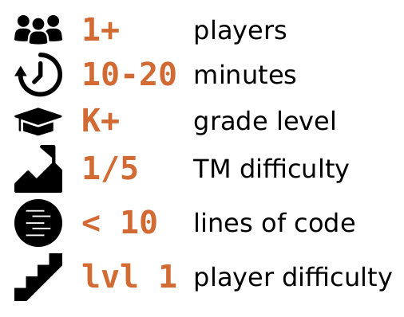
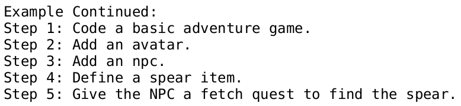
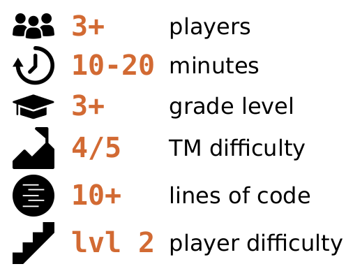
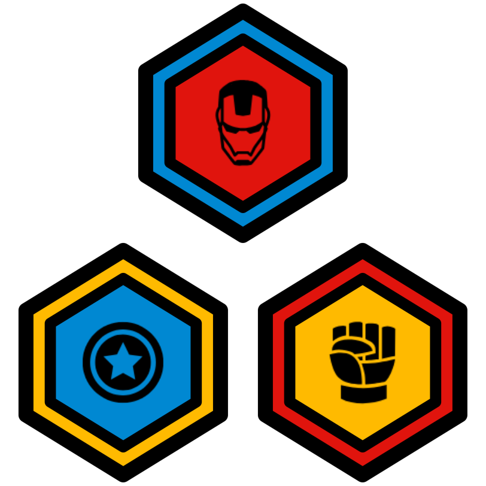

ThoughtSTEM Language Learning Handbook
1 Introduction
Welcome! This handbook contains learning "tactics" – i.e. algorithms, games, and activities designed to help people become extremely fluent in a variety of programming languages.
If you’re a coach, you should use these tactics to do two things:
Help help team members learn to code
Help team members use the learning tactics in this book, to learn to code
This second point is subtle but incredibly important: You are not just teaching coding; you are teaching people how to learn. This manifests in many ways. You’re not just playing games with team; you’re teaching them how to play the games. You’re not just being a coach; you’re teaching them how to coach themselves. You’re not just being a teacher; you’re teaching them how to teach. You’re not just being a leader; you’re teaching them how to lead.
What all this means is: as team members become more and more skilled at doing these tactics, you should be giving them more and more responsibility for helping you lead the tactics.
A brand new member might simply follow along as you lead a tactic. That’s fine. But...
A first-day member who has done a few tactics already should be capable of helping to explain those tactics to others.
A new member with a few days of class under their belt should be able to help you out as an assistant coach in various ways.
After a few weeks, a member should be able to lead a few easy learning tactics from memory and a few advanced ones if they are referencing this book.
After a few months, a member should be able to lead many tactics on their own from memory and any tactic if they use this book.
Your team will only experience this growth in self-driven learning and leadership if you encourage them to begin taking on leadership roles as soon as possible.
Don’t: Only use this book to teach coding.
Do: Teach how to use this book while you’re teaching coding.
Here’s one concrete way you can do that: In this book, you will see tactics that give an instruction to you, the coach. For example:
Coach  hand write the contents of the back of [Challenge-Card] on the bottom half of [The-Whiteboard]
A novice coach might see this instruction and immediately begin writing on the whiteboard.
But let me ask you, who is "the coach"? Remember, it isn’t just you. Think of your team members as coaches-in-training from day 1.
Ask them to write code on the board. Ask them to interpret the instructions for you. Ask them to step into your shoes and lead for a few seconds. A few minutes. A full tactic. Two tactics in a row. And so on.
Your team members should always be actively participating as both learners and leaders. With your help, they can simultaneously improve at both.
It can take time. Have patience. Believe in your team members. Believe in yourself.
2 The Language Learning Loop
The core thing you’ll be doing as a coach is running a "Language Learning Loop". It’s essential that coaches (and coaches-in-training) know what that is and isn’t.
2.1 The "Basic"
The most basic thing that can be considered a "Language Learning Loop" is this, which we call the "Basic":
UNTIL class is over DOCoach
pick challenge-card
Coach
pick tactic
Coach AND Team
do tactic together
Team
officially test on challenge-card
A Language Learning Loop is any high level learning algorithm that has these 5 essential qualities:
- It is a loop. The part that says
UNTIL class is over DO
is what makes it a "loop". It involves selecting a challenge card in some language being learned (e.g. battlearena, html5-lang, vr-lang, or any other ThoughtSTEM language)
It involves selecting a tactic – i.e. a learning algorithm – from this handbook. All tactics in this book are language-independent! That is: any tactic will work for any language. Note, there are many challenge cards, but few tactics. You can (and should!) repeat tactics frequently – but you will only repeat challenge cards if you want to.
It involves doing that tactic together with the team – helping them understand both the code on the challenge card, but also the tactic itself, so that they become better and better learners in the future.
It ends with all team members being officially tested – to see if they can write the code from the back of the challenge card while only seeing the front of the card. Whether they pass or fail, the conclusion of this test is the end of one cycle of the loop – at which point it can begin again with a new challenge card (or the same one).
There are as many Language Learning Loops as there are coaches, and we do encourage you to develop your own unique loop (i.e. unique coaching style) over time. However, when you do decide to innovate on the Language Learning Loop, it is essential that you avoid accidentally leading something that does not fit the definition of a Language Learning Loop.
For example, this does not fit the definition:
UNTIL class is over DOCoach  pick challenge-card
Coach  pick tactic
Coach AND Team
do tactic together
It is a loop. But this loop is missing one of the essential qualities! Indeed, it is missing the most essential quality of a Language Learning Loop: there is no test at the end!
Remember that team members get badges like these for every ten tests that they pass:

These badges need to mean something. The tests are what help the badges maintain integrity. Tests are not easy to pass; and badges are not easy to earn. It’s supposed to be that way.
However, with the appropriate attitude, the learning (and earning) process can be fun – even though it is not easy. That’s precisely your job as a coach: to help team members stay excited about challenging themselves, to help them embrace failure as a opportunity, to help them become proud of their hard work, to help them realize that they can do this even though it is hard.
There is nothing wrong with the "Basic". Many coaches, even extremely advanced ones, use this exact loop. Also, because it is so simple, it is a great one to teach to assistant coaches (i.e. your team members).
There are other Language Learning Loops, however, with different properties. We’ll look at a few now.
2.2 The "Reduce Failures"
Some coaches do not like to see team members fail. That’s understandable. This is a loop that greatly increases the chances that all of the team members will pass the test at the end of the loop. It does so by having another loop inside it, in which you really make sure that the team is prepared for the test at the end.
UNTIL time is up DOCoach
pick challenge-card
Coach
pick tactic
UNTIL the tactic is completed satisfactorily DOCoach AND Team
do tactic together
Team
officially test on challenge-card
This Language Learning Loop is good for novice members (who tend to be sensitive to failure). The drawback is that it takes longer to get to the test. (Then again, the "drawback" is also the whole point – to delay getting there until members are ready.)
2.3 The "100% Pass Rate"
Here’s one that makes absolutely certain that members pass the test at the end of the loop. It works by having an inner loop that has increasingly difficult tests embedded inside of it. This means that by the time you get to the test, you’ve already done the test many times already.
Here’s the "100% Pass Rate":
UNTIL time is up DOCoach
pick challenge-card
Coach
pick Disintegrating Code tactic
Coach AND Team
do Disintegrating Code together
Team
test on challenge-card
This is exactly the same as the "Reduce Failures" – except that instead of picking any tactic in this book, you must pick the Disintegrating Code tactic. This tactic (printed below, and also later in this book) involves a loop where the coach writes code on the whiteboard and removes parts from it until there is nothing left, testing the team at each stage:
Coach
hand write the contents of the back of [the-challenge-card] on the bottom half of [the-whiteboard]
Coach
hand write the contents of the front of [the-challenge-card] on the top half of [the-whiteboard]
UNTIL the contents of the bottom half of [the-whiteboard] is blank DOCoach
remove some identifiers from the contents of the bottom half of [the-whiteboard]
Team
erase all from the contents of [Team-Computers]
Team
write a program that fits the requirements written on the top half of the whiteboard
By the time the tactic is complete, the team members have written the entire code without any prompting – which is precisely what the official test requires them to do. Thus, the test can be skipped (since they did it during the tactic). No need to test the team twice!
This Language Learning Loop is excellent for sensitive novice team members. It has a drawback, though: It only involves one tactic! There are many tactics in this book. Each tactic helps strengthen different coding skillsets. A well-rounded education does require doing a diverse variety of tactics over time.
This is a great loop to start with, though. (Adding in the Code Anatomy tactic into the loop can be a great way to add another dimension to the educational experience.)
2.4 The "Choose Your Own Adventure"
This is a great loop for advanced team members because it gives them more agency over their learning. Here, the tactic is chosen by discussion, and this continues until the team decides to move on to the test.
UNTIL time is up DOCoach
pick challenge-card
UNTIL team decides they are ready for test DOCoach
lead a discussion about "Which tactic should we do next?"
Team
vote on which tactic to do next
Coach AND Team
do tactic together
Team
test on challenge-card
This works best with team members who know a variety of tactics and who have developed sufficient metacognitive skill to know which tactics will help them and their team learn most effectively.
It is also a perfect example of the fundamental principle of this handbook: Teach your team how to learn. The more you involve them as active participants in their own learning, the better.
Note, you will need to know when to override the team’s decisions if their pedagogical insights are flawed (which will be often):
If they tend to keep picking the same comfortable tactics over and over, you will need to encourage them to explore new ones and to embrace discomfort.
If they tend to be reluctant to test themselves, you may need to encourage them to stop doing tactics and take the official test – teaching them that failing a test is not something to be afraid of.
If they tend to be too focused on taking tests and earning badges as fast as possible, you may need to slow them down and point out that the goal is to learn deeply, not quickly.
And so on...
Remember that training your team to be coaches doesn’t mean that you stop being one!
2.5 Language Learning Loops, Conclusion
To conclude, there are many possible Language Learning Loops. You can even create your own. And you are allowed to switch between different loops at will (even in the middle of a class).
As long as a loop contains the essential qualities, it is valid, and you may do it.
Keep in mind, though, the mark of a good coach isn’t how cool or complicated your Language Learning Loops are. It’s how and what your team is learning.
Are they learning coding? Are they learning how to coach themselves and others? These are what matter.
After just one hour of coaching, you can self-assess with some of these questions:
Do your team members know about this handbook? If not, why were you hiding it from them? The first step to helping them to become better coaches is to reveal the resources that you use. Help them understand how they can use those same resources.
Have your team members seen you use this handbook to lead a Language Learning Loop and at least one tactic? It’s fine if you have the contents of this book memorized (the more you coach, the more tactics you’ll memorize) – but you still need to teach "out of the book". Why? Because it implicitly teaches the team how they can teach. If they see you using the handbook, they will be less shy about using it themselves when you hand it over to them and ask them to lead an activity. Use the book – and let your team see you using it. It is a mark of an experienced coach if you can simultaneously: 1) teach coding and 2) teach your teaching process.
Do your team members know what a Language Learning Loop is? Do they know what a tactic is? If not, why not? Weren’t you doing a Language Learning Loop with them? (You should have been! That’s your job as a coach.) If you were, then why weren’t you calling it the "Language Learning Loop"? Do use the vocabulary from this book as you lead activities and structure the educational experience. Your team should know words like "tactic", "challenge card", "Language Learning Loop", etc. If you are coaching correctly, these words should be coming up frequently.
Would your team members be able to lead a tactic on their own? If not, that’s okay. This can take time for some team members. But ask yourself, what can you do next time to challenge them to take on even more of a leadership role?
3 Disintegrating Code
Coach
hand write the contents of the back of [the-challenge-card] on the bottom half of [the-whiteboard]
Coach
hand write the contents of the front of [the-challenge-card] on the top half of [the-whiteboard]
UNTIL the contents of the bottom half of [the-whiteboard] is blank DOCoach
remove some identifiers from the contents of the bottom half of [the-whiteboard]
Team
erase all from the contents of [Team-Computers]
Team
write a program that fits the requirements written on the top half of the whiteboard
3.1 About Disintegrating Code
Don’t let learners believe that real programmers memorize and regurgitate.
Make it clear that the goal is fluency and language mastery.
Make it clear that memorization is just a power tool for language learning (similar to memorizing a Spanish story if you were in Spanish class.)
Make it clear that in the grand scheme of things, it’s less about what they are memorizing and more about the act of memorization itself, and how that trains your brain to be a better programmer.
Tell them it’s okay if they eventually forget what they just memorized – as long as they remember how to memorise it again.
Make it clear that they are training a powerful abstract skill: The ability to translate from English into code.
Make it clear that this is critical for being a software developer, and that it will take many years to become an expert at this cognitive process.
Introduces specification (front of card) and implementation (back of card).
Introduces learners to the Fundamental Cognitive Act of Software Development: the translation from specification to implementation.
Trains pattern matching ("code vision")
Trains recall and recognition for language identifiers ("knowledge acquisition")
Trains general memory skills for abstract grammars ("chunking")
Trains grammatical intuitions for the language at hand ("syntactic and semantic intuition")
Frees working memory for creativity and design by reducing cognitive load caused by lack of language fluency.
4 Code Anatomy
Coach
hand write the contents of the back of [the-challenge-card] on the bottom half of [the-whiteboard]
Coach
put a box around the #lang line
Coach
put a box around all definitions
Coach
put a box around all top-level expressions
Coach
circle all key-words
Coach
write the total number of key words
Coach
put a dot at the beginning of all parenthesized expressions
Coach
write up the total number of expressions
Coach
above each expression dot, write the expression’s nesting depth
If your students forget, here are a some reminders you can show them.
The #lang line always comes first and should be self-explanatory.
Here is an example definition (anything that starts with define). You would put a box around the whole thing (from the parenthesis before define to the matching one).
(define (foo) 42)
Here is a top-level expression. You can recognize it because it doesn’t start with define, and is not wrapped up inside more code. Below, the (basic-avatar) is not a top-level expression, but the containing (start-game #:avatar (basic-avatar)) is:
(start-game #:avatar (basic-avatar))
A keyword is anything with a pound-sign and a colon: e.g. #:avatar.
A parenthesized expression is anything that starts and ends with a parenthesis. That includes:
definitions
top-level expressions
any expression nested in a definition
any expression nested in a top-level expression
An expression’s nesting depth is how many other parenthesized expressions are wrapped around it. For example, there are three expressions below:
(start-game #:avatar (basic-avatar #:sprite (my-cool-sprite)))
The start-game expression has a depth of 0 (because there are 0 parentheses that wrap around it). The basic-avatar expression has a depth of 1, because it is inside the start-game expression. And the my-cool-sprite expression has a depth of 2, because it is inside the basic-avatar expression.
All expressions have a nesting depth.
4.1 About Code Anatomy
Make it clear that software developers use technical language daily.
Make it clear that learning the names for things is critical for communicating with other developers.
Make it clear that learning the names for things makes it easier to assess one’s own learning (you now have a vocabulary for expressing what you know and don’t know).
Make it clear that just covering the vocabulary once is not the point. The point is to gain a kind of instantaneous, fluent recall over these concepts, such that when you see certain syntactic structures, you think of their names automatically.
Make it clear that, with practice, learners will move from recognition, to recall, to automaticity with all named concepts.
Make it clear that knowing the names for things does not mean you can write or read code. It is just an aid to becoming fluent, not something that makes you fluent automatically.
Make it clear that this tactic isn’t just to cover the vocabulary – but to build greater and greater fluency over time. It should still be done even after learners know the vocabulary.
Make it clear that the speed at which learners can complete this tactic is the main indicator of their fluent retrieval of key information. As always, help them aspire to be faster and more fluent.
Exposes learners to key coding vocabulary
Exposes learners to the systematic deconstruction of code into its parts
Helps learners analyze code independently of its specification: structural analysis.
Aids memory regarding the code at hand
Learners gain a structured methodology for deconstructing code into its nameable parts
Learners gain a structured methodology for "chunking" their understanding of code
First: Learners gain recognition over key vocabulary
Second: Learners gain recall over key vocabulary
Third: Learners gain fluency regarding key vocabulary
5 Make it More Precise, then Make it More Precise
Coach
hand write the contents of the front of [the-challenge-card] on the top half of [the-whiteboard]
Coach
announce "Your goal is to all write the EXACT same code on your own computer, silently and independently."
Coach
announce "Before you start, we can translate this prompt into very specific instructions – but only in English, NO CODE!"
UNTIL [Team] feels they can achieve the goal DOTeam
hand write more specific instructions on [the-whiteboard]
Coach
announce "There is NO talking from now until the timer goes off."
Coach
set [timer] for [five-minutes]
UNTIL [timer] beeps DOTeam
write code independently on [Team-Computers] using the contents of [the-whiteboard]
Team
compares the contents of [Team-Computers]
Coach IF [Team] all wrote exact same code
IF [Team] all wrote exact same codecongratulate [Team]
ELSElead a discussion about "How could we get more specific in our pre-code translation?"
5.1 About Make it More Precise, then Make it More Precise
Make it clear that real software developers do precisely this activity: clarifying specifications before implementing.
Make it clear that software developers need to be masters of their native language, and masters of how to use their native language to express ideas very precisely.
Make it clear that your ability to communicate precisely and your ability to think precisely go hand in hand.
Demonstrates an abstract problem solving process that can be used across a range of problems
Makes learners aware of the Fundamental Cognitive Act of Software Development and helps isolate its essential quality: iteratively adding clarity and precision to an idea that previously lacked both.
Helps learners realize that they (as speakers and writers of English) already have key cognitive tools that they will use as software developers.
Learners gain a structured methodology for implementing code from a specification
Learners gain a structured methodology for making any idea more clear than it previously was
First: Learners gain recognition over English phrases that can be clarified
Second: Learners gain recall over standard techniques for phrasing things more precisely
Third: Learners gain fluency in English to English translation, able to effortlessly rephrase ideas for technical audience or a non-technical audience, as well as to translate a specification into a structured implementation plan.
6 Reverse Engineering
Coach
find [the-challenge-card] on [the-kata-page]
Coach
copy/paste code from [the-kata-page] into [Coach-Computer]
Coach
run the game
Coach
show the running game to the team (hide code)
Coach
lead a discussion about "What are the code-able features of this game?"
Team
hand write list of code-able features on [the-whiteboard]
Team
circle the code-able features they don’t know how to code
UNTIL [Team] has hints for all unknown code-able features DOTeam
write hint next to unknown code-able features using the back of [the-challenge-card]
Team
write the code to create the game on [Team-Computers]
6.1 About Reverse Engineering
Make it clear that real software developers do reverse engineering frequently.
Make it clear that their specification doesn’t have to be the same as the one written on the card. However, the team should hold themselves to high standard. If their specification differs greatly from the one written on the card, the question needs to be asked: Why? And: Which specification is better?
Make it clear that specifications aren’t "right" or "wrong". Value judgements must frequently be made to determine which of two specifications is better and why. You can and should discuss such things when they arise.
Teaches the vocabulary word: "reverse engineering"
Makes learners aware that specifications can arise from engaging with software
Makes learners aware that not all specifications are equal
Makes learners aware that the same implementation can be specified in many ways, and that the different ways can be evaluated relative to each other through discussion with team members
Learners gain an ability to deconstruct an interface and predict which coding constructs were necessary in its implementation
Learners gain a fluency in deconstructing an interface into a list of features that can be implemented separately – aiding the developer’s ability to deconstruct large problems into smaller ones.
7 Advanced Tactics
These are tactics that are longer and more complex – and a bit more like "games". If the team members have done many simpler tactics, they are ready for these. You can use them as a reward for becoming more adept.
These tactics, due to the complex team dynamics they call for, help to build higher-level skills – i.e. communication, collaboration, leadership, and teaching skills.
Note that the instructions in these tactics may make use of subroutines – which are instructions that aren’t printed in the tactic itself. It’ll look something like this:
Team
Do something
Team
Do something else
GO SUB:
#lang ts-tactics (select-secret-subgroup 'Hackers)
Team
Do something at the end
How many instructions are in the tactic above? It may seem that there are just three or four. But the GO SUB: instruction is very special.
Team
Do something at the end
Doing tactics with subroutines requires keeping track of where you were in the tactic before you started doing the subroutine (because you’ll need to come back there when the subroutine is finished). It is the team’s responsibility to keep these things in mind – which is why these tactics are for advanced teams.
IMPORTANT:
You will need to install/update the ts-tactics package to run these tactics. In DrRacket: File > Install Package...
8 Mafia
Coach
tell the following as a story (be creative) "You’re a game development company. The big release is a few days away! The code keeps breaking in the night..."
GO SUB:
#lang ts-tactics (select-secret-subgroup 'Hackers)
Coach
hand write the contents of the back of [the-challenge-card] on [the-whiteboard]
Coach announce the contents of the front of [the-challenge-card]
UNTILEITHER: [Jail] contains all of the people in [Hackers]
OR: [Hackers] have exactly 2 points
DO
NIGHTHackers
introduce subtle bugs the contents of the contents of [the-whiteboard]
DAYGO SUB:
#lang ts-tactics (collaboratively-debug) END-OF-DAYCoach IF the contents of the front of [the-whiteboard] has no bugs
IF the contents of the front of [the-whiteboard] has no bugsadd 0 to current points for [Hackers]
ELSEadd 1 to current points for [Hackers]
GO SUB:
#lang ts-tactics (vote-member-into-new-group (not-in 'Jail) 'Jail)
Coach IF [Jail] contains all of the people in [Hackers]
IF [Jail] contains all of the people in [Hackers]lead a discussion about "What are some strategies for when you get picked as a hacker?"
ELSElead a discussion about "What are some strategies for debugging code?"
9 Team Memorize
Coach
announce "In a moment, you must decide which order you will take turns in. You may also strategize during this phase. Do this wisely. After this phase, you will not be allowed to talk freely."
Coach
lead a discussion about the front of [the-challenge-card]
Team arrange yourselves in a circle (the person to the right of [Coach] shall be [The-Starting-Player])
Coach
announce "The [Silent] phase has begun. Any talking during this phase will result in penalties and possibly an instant-loss. Hand signals are permitted. Looking at the challenge card when you are not the owner is forbidden."
Coach
give [the-challenge-card] to [The-Starting-Player]
UNTIL everyone in the circle has had at least 1 turn(s) DOGO SUB:
#lang ts-tactics (pass-and-memorize 10)
Coach
announce "The [One-Talker] phase has begun. During this phase, you may only speak or gesture if you own the timer. If you own the whiteboard, you may write or gesture (but you may not speak). All other forms of communication from anyone will result in penalties or an instant loss for the whole team."
Coach
hide [the-challenge-card]
Coach
give [the-whiteboard] to [The-Starting-Player]
Coach
give [the-timer] to the person to the right of [The-Starting-Player]
UNTIL everyone in the circle has had at least 1 turn(s) DOGO SUB:
#lang ts-tactics (timer-holder-talks-to-scribe)
Coach
announce "The [Testing] phase has begun. All communication is forbidden in this phase. However, you may type on your own computer and look at the whiteboard whenever you want. By the end of this phase, the goal is to have the same code on all of the computers. And it must work correctly! Nod your heads if you understand."
Team
nod
Coach
announce "You have 5 minutes beginning now."
Coach
set 5 minutes on [the-timer]
UNTIL [the-timer] is beeping DOTeamwrite code
as you wish, but minding the rules of the current phase
Coach
announce "The [Scoring] phase has now begun. If the code on EACH computer is correct, we all win."
GO SUB:
#lang ts-tactics (all-correct-post-mortem)
10 The End
This handbook is a living document. If you have ideas for more tactics, let us know. We’ll be adding more.
contact@thoughtstem.com |